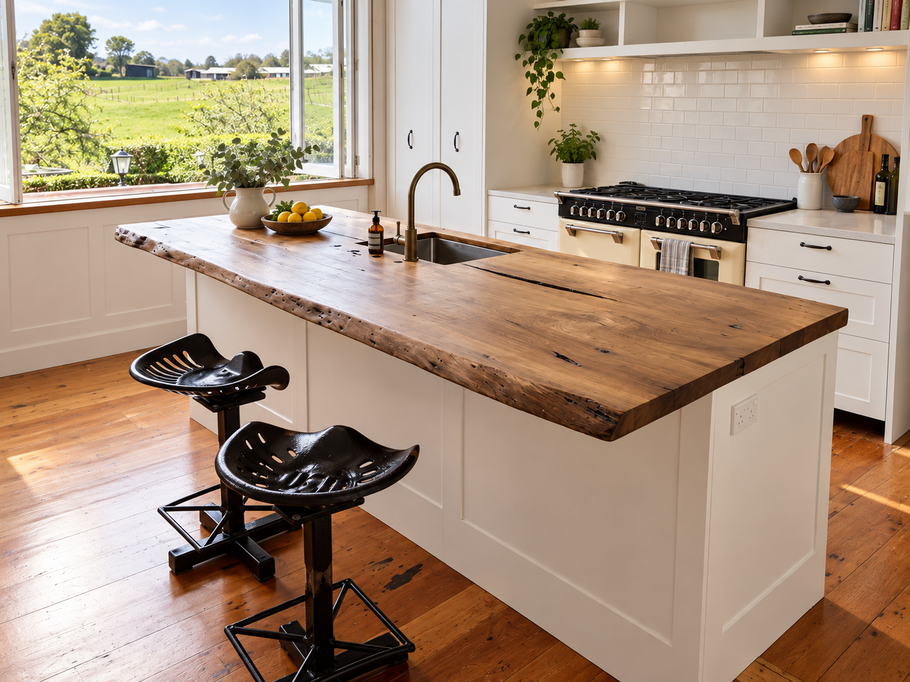
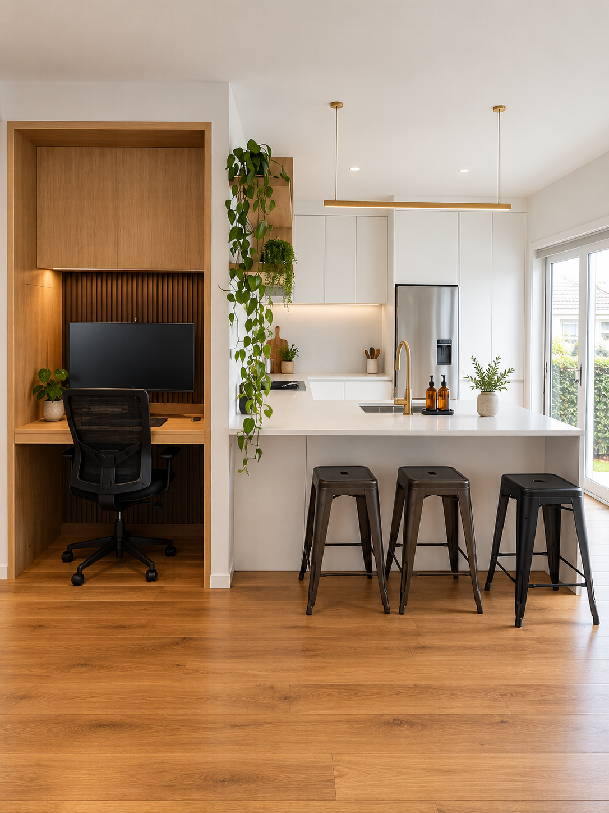
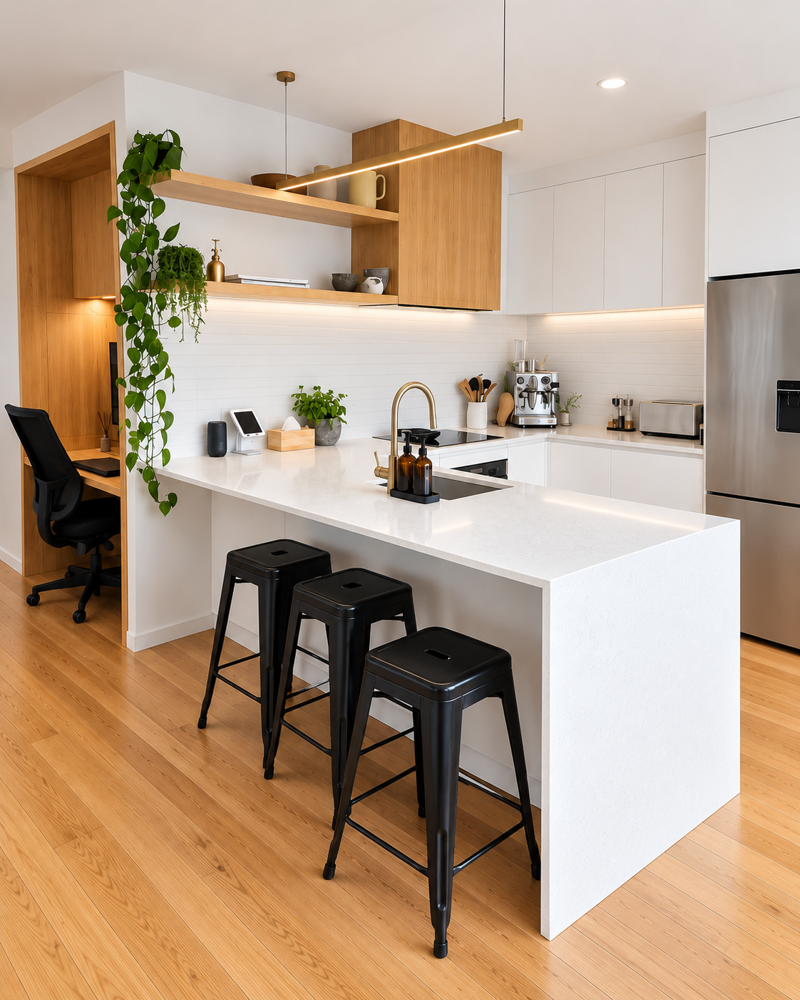
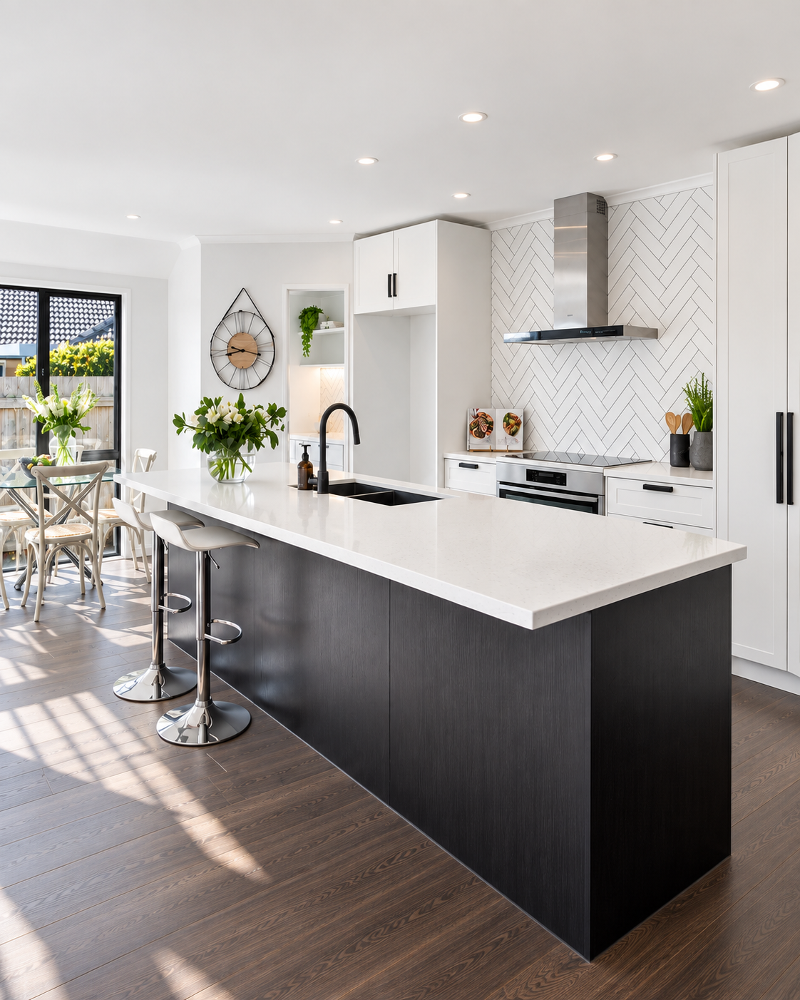
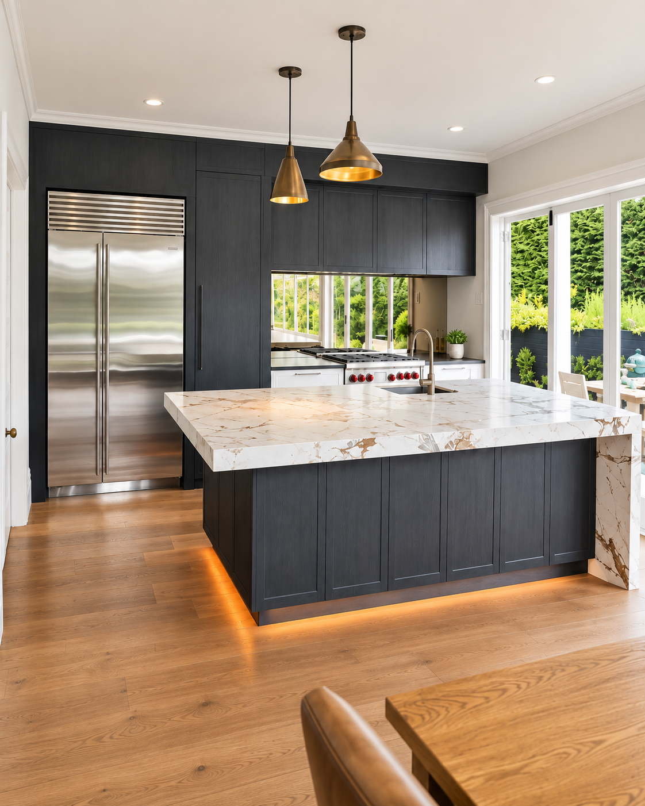
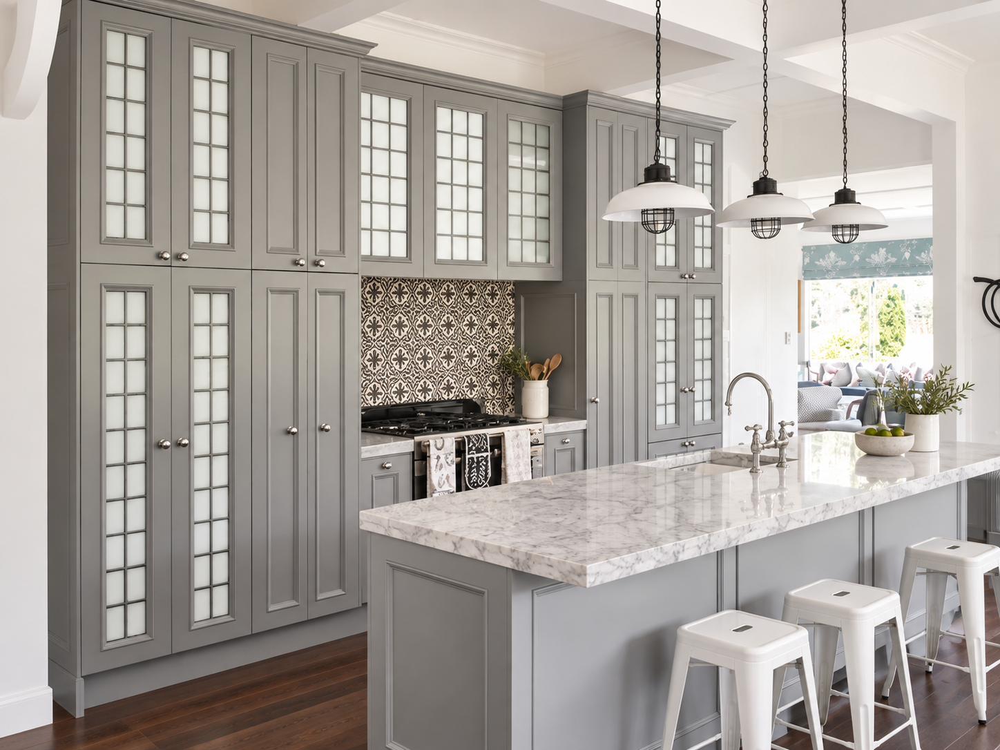
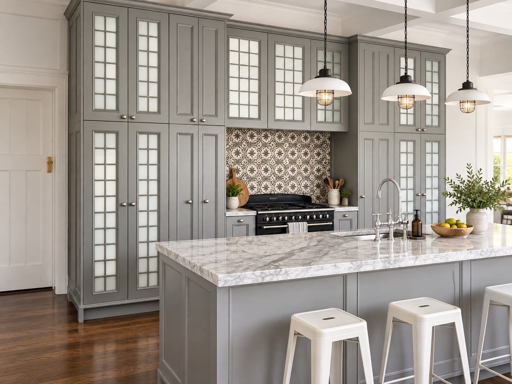
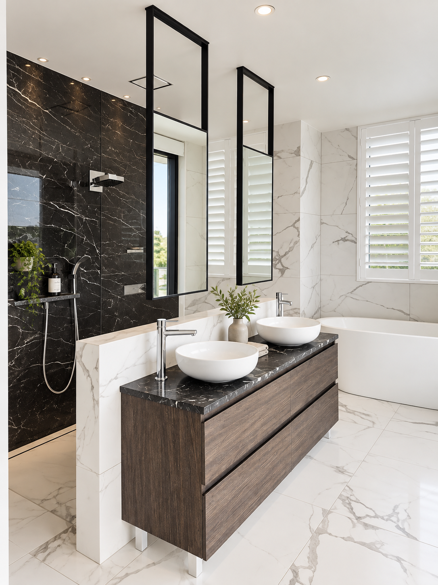

Completed projects
Our Work
Photographs of completed kitchens, bathrooms and custom furniture — built in our East Tāmaki workshop and installed in Auckland homes.
Real jobs, real homes
Completed Kitchens
Every kitchen below was designed, manufactured in our workshop and installed by our team.
Open-plan kitchen with marble island


Family kitchen with freestanding range


White shaker kitchen with cream range cooker


Country kitchen with live-edge timber island



Contemporary open-plan with built-in study



White kitchen with dark island and herringbone splashback


Dark charcoal kitchen with waterfall marble island


French grey kitchen with glass-front cabinetry



Completed Bathrooms
Custom vanities and bathroom cabinetry, designed and built in our workshop.


Custom Furniture & Booth Seating
Style reference images: These images show the styles and finishes we can produce for booth and banquette seating. Contact us to discuss your own brief.


Seen something that inspires you?
Bring the idea to us and we'll design something around your kitchen and your brief. Every project starts with a conversation.